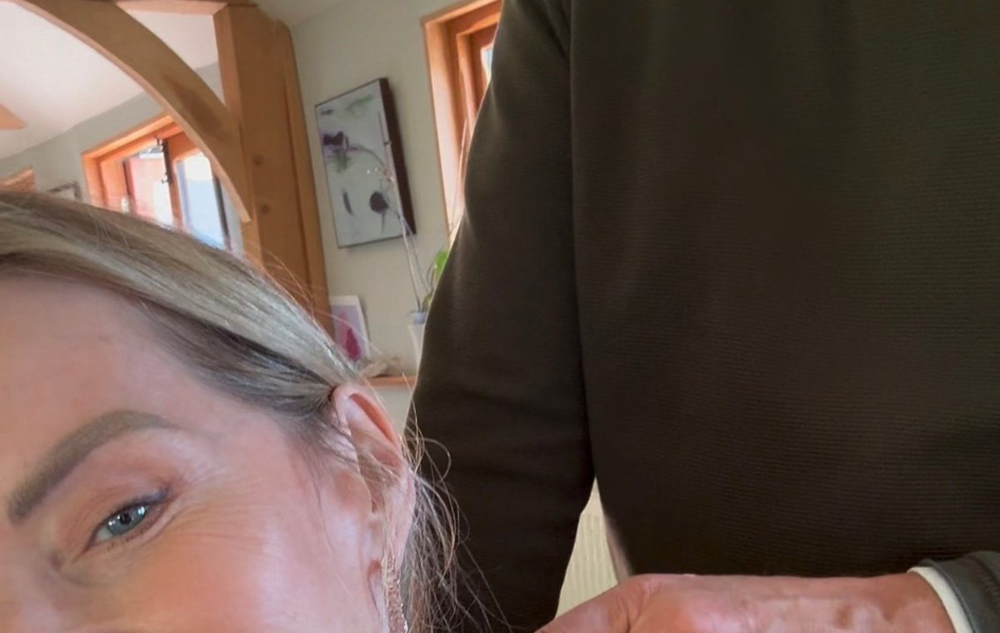
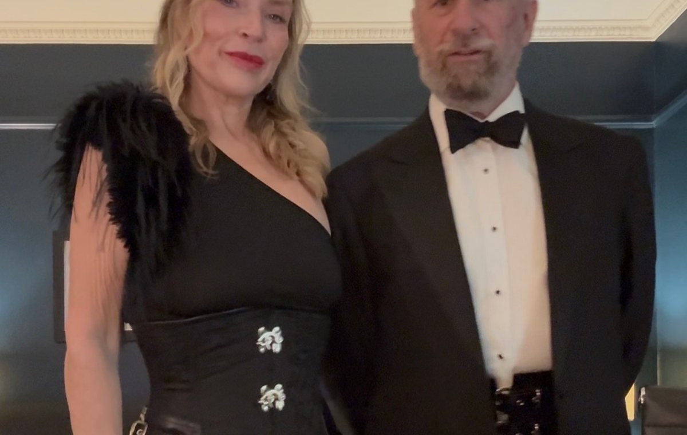
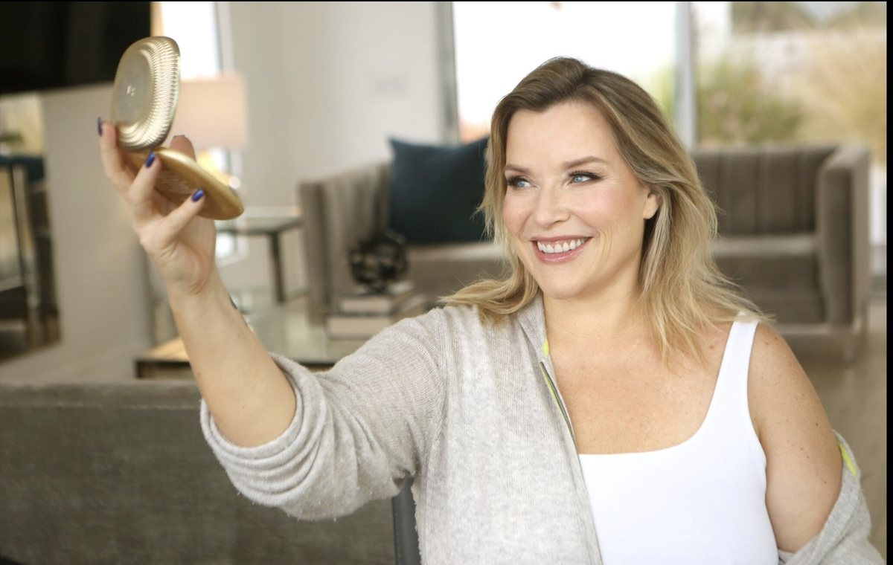
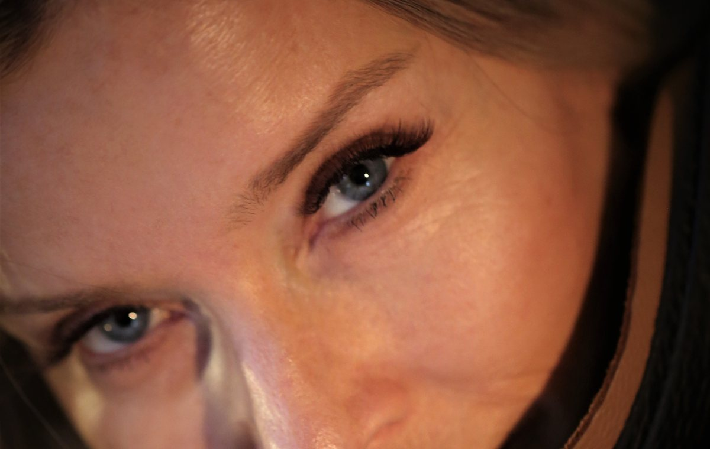
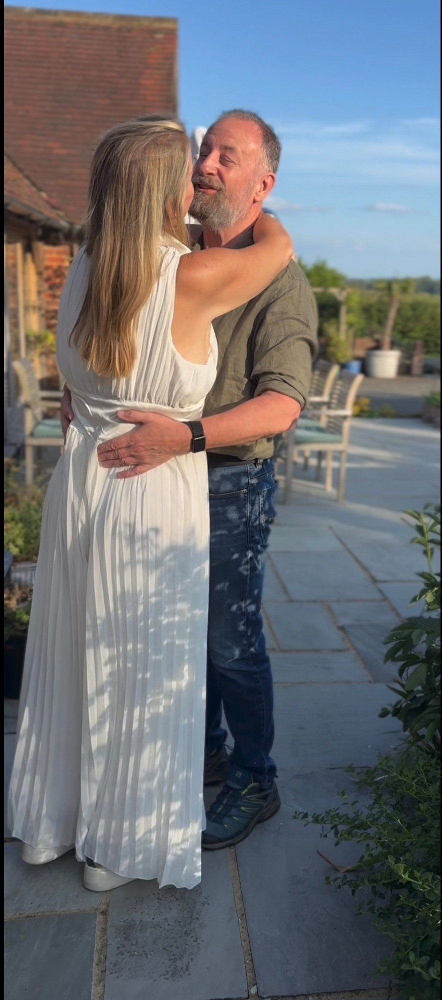
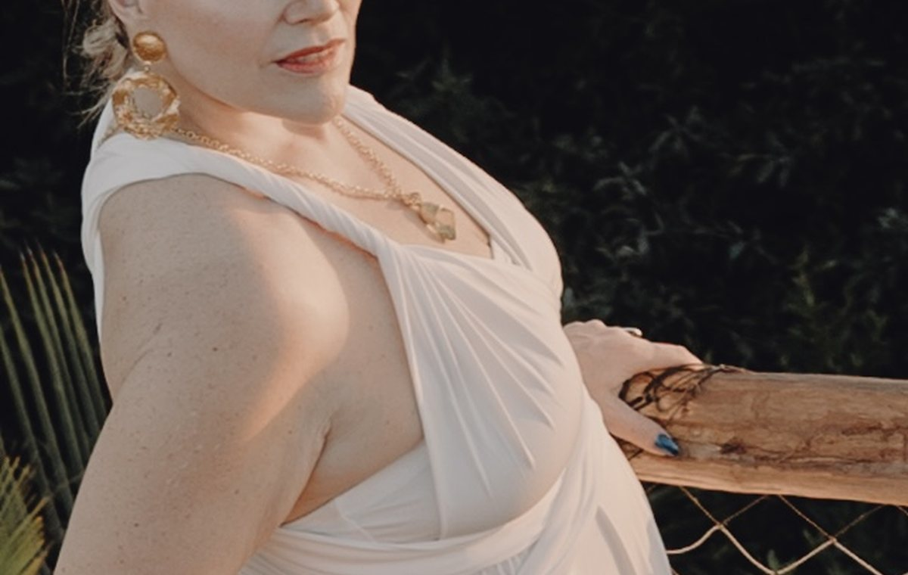
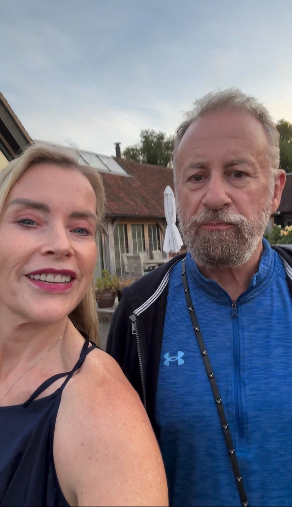
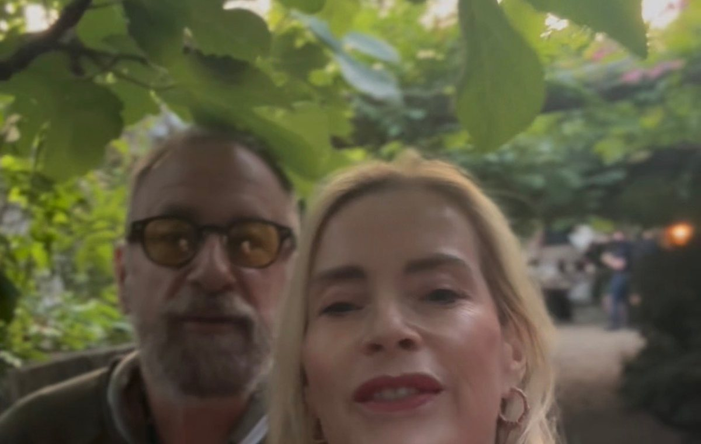

What it is
You say one true thing. Then you stop.
That is the whole move.
And it is harder than it sounds, because the sentence wants a passenger.
- A question on the end.
- A small sigh.
- A glance up to see how it landed.
Something that says:
Now tell me what you think.
Tell me we're okay.
Give me something back.
And suddenly the thing you said isn't quite finished anymore.
It has something attached to it that the other person now has to decide whether and how to respond to.
The Full Stop takes that off.
You say the true thing. You let it be finished.
Your honesty. No invoice attached.

Why it is called a Full Stop
You already know this move in another context.
When someone is touching you and you say stop, a real stop is the one that is honoured the moment it arrives.
- The hand comes off.
- Nobody asks why.
- Nobody says just a bit longer.
- You don't have to explain your stop before it counts.
The stop is the stop.
The Full Stop brings that same quality of completion into speech.
You say what is true for you. When the sentence is finished, you let it finish.
You don't reach across the space afterwards with another question. You don't quietly ask the other person to complete the moment for you.
A sentence with a question on the end is a hand that did not quite come off.
That's why it's called a Full Stop.

What the question actually does
It transfers the work.
You said the true thing. That took something. Then you added four words:
Are you okay?
Did you?
What do you think?
Is that alright?
Now there is something for her to answer.
She might reassure you. Explain herself. Tell you what she thinks. Try to work out what you're really asking. Or simply feel the pull to respond because you've asked her a question.
None of that makes questions bad.
The point is to notice when you didn't actually need one.
Because sometimes the question isn't there because you need information.
It's there because you don't quite know how to leave your own sentence standing on its own.
The Full Stop is the version where you practise doing exactly that.
Say the true thing. Don't hand the ending across the room. Let it be finished.

The three ways it leaks
You will rarely get the sentence itself wrong. It's the ending to watch.
The question mark
You say the true thing. Then you tag a question onto the end because leaving the sentence sitting there feels unfinished.
"I missed you today. Did you miss me?"
The first sentence was complete. The question changed the exchange. Now there is something to answer.
The sigh
You stop talking, but the sentence keeps going through the sigh afterwards. You know the one. The exhale that carries:
Well... There you go. I suppose that's that.
You haven't asked a question in words. But you haven't quite left the sentence alone either.
The look
You say it. Then immediately look at her face to see how it landed.
Did she like it? Did she soften? Did she understand? Is she going to give you something back?
Notice the checking. Say it, and let it be finished.

Twelve worked pairs
The Full Stop, and the same moment with something added to the end.
Read both versions out loud. Don't just understand the difference. Hear it.
Now read the "with something attached" versions again. Notice what changes when the question arrives.
None of those questions are inherently wrong. That's important.
You're learning to notice the difference between a question you genuinely want to ask and a question you've attached because you don't know how to let the sentence end.

The hard one: when she says nothing
You say your true thing. She says nothing.
The silence lasts a little longer than you'd like.
Your mind may immediately start filling it.
She didn't care.
It didn't land.
I got it wrong.
I should say something else.
You don't actually know any of that. What you know is: you said something. She hasn't responded. That's all.
This is where you practise the Full Stop.
- Don't fill the silence just because it's uncomfortable.
- Don't add the question you deliberately left off.
- Don't explain what you meant.
- Don't make a joke to release the tension.
- Don't stare at her waiting for a reaction.
She is allowed to respond. She is allowed not to respond. The Full Stop doesn't require either one.
Say the thing. Let it be finished.

How to practise it
One a day, for a week.
Not as a set piece. Not as "Come here, I need to practise something." Just in the ordinary run of things.
Notice one true thing. Say it. Then stop.
It doesn't have to be significant. In fact, start with the small ones.
Then let the sentence end.
If you don't know what to do with yourself afterwards, go and do something else with your hands. Make the tea. Put something away. Carry on with whatever you were doing.
You're practising the ending.
One a day is enough. Don't turn it into a performance by delivering five carefully observed statements before dinner.
The point is not to say more. The point is to practise stopping.
What you might notice
At first, the sentence may feel unfinished in your mouth.
You may reach the end and immediately want to add: "What do you think?" "Do you?" "Are we okay?"
Or you might stop the words and then notice the sigh. The look. The waiting.
That's the practice. Noticing the moment you want to add something.
You may catch yourself before the question comes out. You may catch it halfway through. Or you may only realise afterwards. All three give you information.
You don't need to monitor whether anything changes in her. You don't need to count how often she responds. You don't need to decide whether the Full Stop is "working" based on what she does next.
You're practising your side of the exchange.
Can you say something true without immediately asking the other person to complete the moment for you?
That's enough.
If you lose the Full Stop
You added the question before you could stop yourself.+
Let it go. Don't immediately turn it into "Sorry, I wasn't supposed to ask that." "I'm trying this new thing." "That wasn't a proper Full Stop."
Now you're just adding more to the moment.
Notice it. Try again next time.
She asks what you meant.+
Answer her. The Full Stop doesn't mean you refuse to have a conversation.
If she asks you something, respond plainly. Then let that answer finish too.
It came out as an accusation.+
Come back to what you actually noticed. There's a difference between "You seem further away." and "You never talk to me anymore."
One describes what you're noticing. The other tells her what she's doing wrong.
If what you really want is to confront, accuse or get an answer, don't disguise it as a Full Stop. That's a different conversation.
Nothing happens afterwards.+
Good. Nothing has to.
This isn't a technique for getting her to soften, answer, come closer or reassure you.
If you're waiting for a particular response, you've quietly put the question mark back on.
Your part is simpler.
Say one true thing. Let it finish. Full stop.


Your week
Notice one true thing. Say it. Then stop.
A week of Full Stops. That is enough.